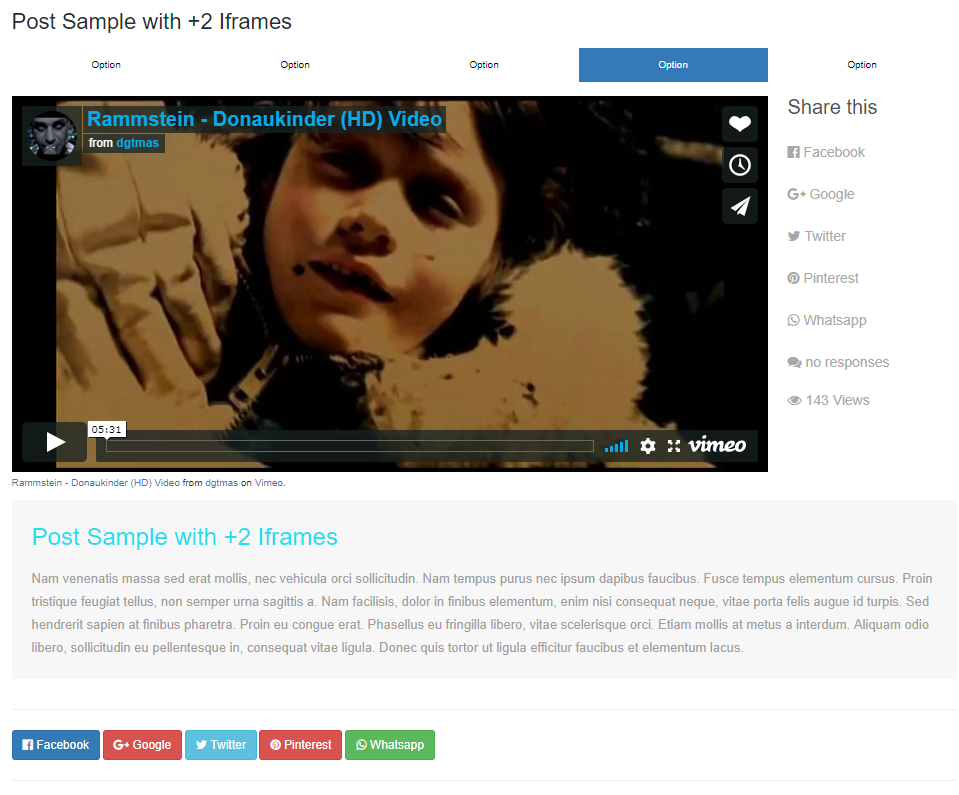
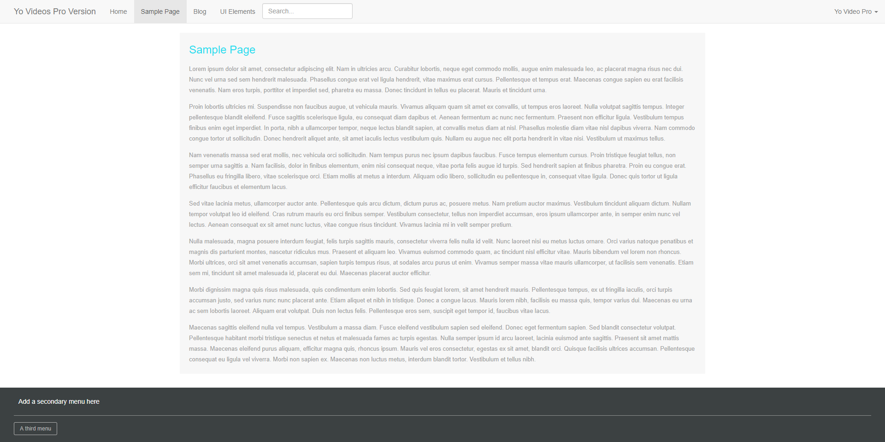

“YoVideos Pro - WordPress Video Hosting ”
Documentation by “Kevin Fonseca” v1.0
“YoVideos Pro-Version”
Created: 10/06/2017
By: Kevin Azuara Fonseca
Email: kebin1421@hotmail.com
Live Preview: YoVideos Pro Version
Thank you for purchasing my theme. If you have any questions that are beyond the scope of this help file, please feel free to email via my user page contact form here. Thanks so much!
Table of Contents
- How to upload Iframes
- If there's not iframe inserted, then what?
- Custom Javascript
- Custom Functions
- Sources and Credits
A) How to upload Iframes - top
When posting or editing a post, go to the custom fields box and select the option "Iframe" , after selecting it, paste the iframe into the input next to it. You can add as many as you want

So, to ensure that your iframe is shown do not forget to press the button below the custom field box "Add Custom Field"
This is how it will look like with 5 iframes
B) If there's not iframe inserted, then what? - top
If you decide not to upload an iframe, you will be still able to publish your content without showing the iframe tabs in the front-end by just deleting the custom field.

This is how the single.php file will look like without iframes
Remember to delete any unwanted custom field
C) JavaScript - top
The YoVideo Pro version template use a custom Javascripts code for the iframes
Custom Javascript on the end of single.php file
Check these scripts if you feel like improving it. What they do is blocking the iframes from being redirected to their servers and restarting the current video when a different option is selected
//Remove links on any Iframe. This avoids opening a browser tab redirecting to the website/server from which the Iframe is.
$(function () {
$('a.removeBlank').on('click', function () {
if ($(this).attr('target') == "_blank") {
$(this).attr('target', '_self');
}
$(this).click();
return false;
})
});
// Solution to stop current video when a different option is clicked. This ensures that no "video background" occurs.
$('a.nav-link').click(function(e) {
$('div#myTabContent div.tab-pane.active iframe').attr('src',function() { return $(this).attr('src'); });
});
$('a.nav-link:first').trigger('click');
D) Custom Functions - top
The YoVideo Pro version template uses several custom functions
Custom functions on the functions.php file
The first one is for the iframes. Check it if you feel like improving it.
// Iframe
function iframe($postID){
$iframe = 'Iframe';
$iframe_player = get_post_meta($postID, $iframe, true);
if($iframe_player==''){
delete_post_meta($postID,$iframe);
add_post_meta($postID,$iframe, '#');
return "#";
}
return $iframe_player;
}
The second one is for the login page. Check it if you feel like improving it.
function my_login_logo_url() {
return home_url();
}
add_filter( 'login_headerurl', 'my_login_logo_url' );
function my_login_logo_url_title() {
return 'Mag Press';
}
add_filter( 'login_headertitle', 'my_login_logo_url_title' );
function my_login_stylesheet() {
wp_enqueue_style( 'custom-login', get_stylesheet_directory_uri() . '/style.css' );
}
add_action( 'login_enqueue_scripts', 'my_login_stylesheet' );
To customize the image background and the logo in the login page, you will need to access to style.css file. Find this(line 686 if not mistaken):
body.login {
background: url(http://www.xsjjys.com/data/out/243/WHDQ-513778957.jpg) repeat center center;
background-size:cover;
}
body.login div#login {}
body.login div#login h1 {}
body.login div#login h1 a {
background-image: url(images/login-register-lost.png);
height:80px;
width:80px;
background-size: 80px 80px;
background-repeat: no-repeat;
padding-bottom: 30px;
}
/******************** Login Form ********************/
body.login div#login form#loginform {
border: 1px solid #ffffff;
background: transparent;
}
body.login div#login form#loginform p {}
body.login div#login form#loginform p label {
color:#ffffff;
text-shadow: -1px 0 black, 0 1px black, 1px 0 black, 0 -1px black;
}
body.login div#login p#nav {
color:#ffffff;
text-shadow: -1px 0 black, 0 1px black, 1px 0 black, 0 -1px black;
}
body.login div#login p#nav a {
color:#ffffff;
text-shadow: -1px 0 black, 0 1px black, 1px 0 black, 0 -1px black;
}
body.login div#login p#backtoblog {}
body.login div#login p#backtoblog a {
color:#ffffff;
text-shadow: -1px 0 black, 0 1px black, 1px 0 black, 0 -1px black;
}
/******************** Register Form ********************/
body.login div#login form#registerform {
border: 1px solid #ffffff;
background: transparent;
}
body.login div#login form#registerform p {
color:#ffffff;
text-shadow: -1px 0 black, 0 1px black, 1px 0 black, 0 -1px black;
}
body.login div#login form#registerform p label {
color:#ffffff;
text-shadow: -1px 0 black, 0 1px black, 1px 0 black, 0 -1px black;
}
/******************** Lost Password Form ********************/
body.login div#login form#lostpasswordform {
border: 1px solid #ffffff;
background: transparent;
}
body.login div#login form#lostpasswordform p {
color:#ffffff;
text-shadow: -1px 0 black, 0 1px black, 1px 0 black, 0 -1px black;
}
body.login div#login form#lostpasswordform p label {
color:#ffffff;
text-shadow: -1px 0 black, 0 1px black, 1px 0 black, 0 -1px black;
}
The third one is to remove the WordPress welcome dashboard panel. You can delete this if you want to as this function does not affect the template on any way.
remove_action('welcome_panel', 'wp_welcome_panel');
The fourth one is for the excerpt lenght. You can change the number to the number you want to. If you feel like improving it, feel free to do so by finding this:
function set_excerpt_length(){
return 20;
}
add_filter('excerpt_length' , 'set_excerpt_length');
The fifth function is to display or to count the views per post
// function to display number of posts.
function getPostViews($postID){
$count_key = 'post_views_count';
$count = get_post_meta($postID, $count_key, true);
if($count==''){
delete_post_meta($postID, $count_key);
add_post_meta($postID, $count_key, '0');
return "0 Views";
}
return $count.' Views';
}
// function to count views.
function setPostViews($postID) {
$count_key = 'post_views_count';
$count = get_post_meta($postID, $count_key, true);
if($count==''){
$count = 0;
delete_post_meta($postID, $count_key);
add_post_meta($postID, $count_key, '0');
}else{
$count++;
update_post_meta($postID, $count_key, $count);
}
}
// Add it to a column in WP-Admin
add_filter('manage_posts_columns', 'posts_column_views');
add_action('manage_posts_custom_column', 'posts_custom_column_views',5,2);
function posts_column_views($defaults){
$defaults['post_views'] = __('Views');
return $defaults;
}
function posts_custom_column_views($column_name, $id){
if($column_name === 'post_views'){
echo getPostViews(get_the_ID());
}
}
E) Sources and Credits - top
The YoVideo Pro version template was designed by W3 Layout and programmed with love by Kevin Fonseca
In order to be allowed to use this desing, please do not delete the following comments in your style.css file. If you wish to delete it, go to W3 Layout and donate.
/*--A Design by W3layouts Author: W3layout Author URL: http://w3layouts.com License: Creative Commons Attribution 3.0 Unported License URL: http://creativecommons.org/licenses/by/3.0/ --*/All credits for using images on this template goes to their respective uploaders
Thanks for purchasing the template. If you need further help, please send a message to the email provided in the beginning of this file.
See more of my free templates on Kevin Fonseca and my premium templates on My Envanto Portfolio
Kevin Fonseca